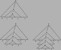

CMPT 413 - Spring 2004 - Computational Linguistics |
|
|
 | |
|
|
Computational Linguistics is the study of human language from a computational perspective. This course will examine algorithms used in the automatic analysis or production of language. Along with formal models of language, we will also study the engineering of natural language processing software. Many of the concepts, methods and algorithms studied are related to topics like formal linguistics, information retrieval, data mining from text, and bioinformatics. The course will also provide an introduction to programming with Perl. Assignments will develop expertise in Perl and provide exposure to commonly used algorithms.
Announcements |
~anoop/cmpt413/ on
fraser.sfu.ca and CSIL machines
Assignments |
perl --version on the
machine you are developing on and upgrade if necessary.ssh to login to the CSIL Linux
machines and also use scp to copy over and test your
programs on the CSIL Linux machines before you submit them. Check the MTF Layout map for the machine names.dos2unix
command
on Linux. There will be no extensions for problems with non-CSIL
machines, so don't ask. fraser.sfu.ca
~anoop/cmpt413/hw1 ~anoop/cmpt413/hw2~anoop/cmpt413/hw3~anoop/cmpt413/hw4~anoop/cmpt413/hw5man perlrefman perlmod~anoop/cmpt413/hw6~anoop/cmpt413/hw7~anoop/cmpt413/hw8
Syllabus and Readings |
perl perl_interpreter.pl. Enter
commands from the Perl tutorial notes (above) and
observe the results
Textbooks |
 |
Speech and Language Processing: An Introduction to Natural
Language Processing, Computational Linguistics, and Speech Recognition
by Daniel Jurafsky, James H. Martin. 934 pages 1 edition (January 26,
2000), Prentice Hall, ISBN: 0130950696 The book also has a webpage. In particular visit it for the Errata and the online Resources sections. |
| Programming Perl by Larry Wall, Brett McLaughlin, Jon Orwant.
400 pages 3 edition (August 30, 2000), O'Reilly & Associates, Inc.,
ISBN: 0596000278 While the book "Programming Perl" is not a reference book for this course, you might find it or an equivalent perl programming book invaluable when dealing with the homeworks which include programming assignments to be done in Perl. For my own use, I find "The Perl CD Bookshelf" published by O'Reilly to be quite a good deal: it contains 7 books on Perl (including this one) on one cdrom. There are many online Perl tutorials of varying quality. Links to some of them are provided in the Links section below. |
 |
Foundations of Statistical Natural Language Processing by
Christopher D. Manning, Hinrich Schutze. 680 pages 1 edition (1999),
M.I.T. Press/Triliteral, ISBN: 0262133601 This book will be useful in cases where you want a different presentation of the same material that is required reading from J&M. In many cases the statistical approaches are covered in a bit more detail in this book. However, it does not contain all the topics that we will cover in this course. |
 |
Introduction to the Theory of Computation by Michael Sipser. 480 pages (December 1996), PWS Pub. Co. ISBN: 053494728X |
Course Expectations and Policies |
Links to Useful Software and Data |
Courses in Computational Linguistics Elsewhere |